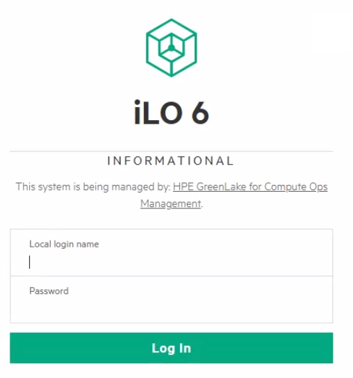
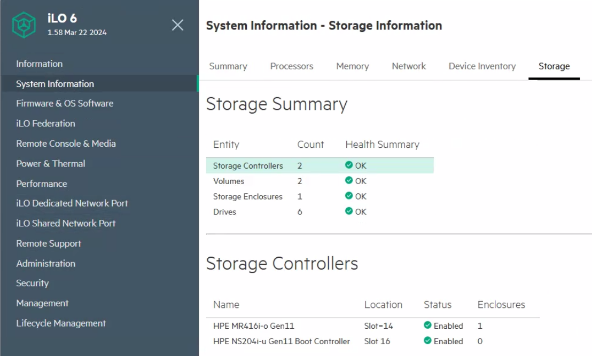

Tutorial – VMware / Hardware Check
This check verifies the health status of the physical RAID configuration on the ESXi host. It reviews the condition of RAID arrays and underlying disks to identify degraded or failed components.
This is a verification-only control. No RAID configuration or disk replacement is performed as part of this check.
Open a browser and access the remote management interface using its IP address or FQDN.

Navigate to the Storage or RAID section and review the status of RAID arrays and physical disks.
